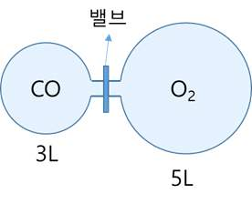

문제 3
아래 모양과 같은 용기에서 가운데 밸브가 잠겨있으며 전체의 온도는 절대 온도 T인 상황에서, 왼쪽 용기에는 2기압의 일산화탄소 (CO)를 오른쪽 용기에는 3.4기압의 산소 (\(\text{O}_2\))를 채워 넣었다.

가운데 밸브를 연 이후에, 온도를 올려서 일산화탄소를 완전 연소 후 전체 내부 온도를 측정해보니 3T가 되었다. 이때의 용기 내부의 압력을 구하시오. 모든 기체는 이상 기체로 가정하고, 가운데 연결 부위의 부피는 무시하시오. (4점)